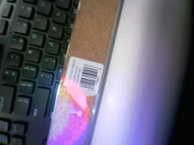
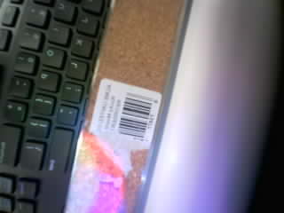
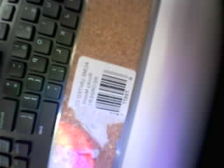

Frame 36: WAITING_FOR_GROWTH | 15.000% changed area | growth 0% across 1 frames
Original JPEG · MeasurementsFrame 37: WAITING_FOR_GROWTH | 18.042% changed area | growth 20% across 2 frames
Original JPEG · Measurements
Frame 38: WAITING_FOR_GROWTH | 23.375% changed area | growth 55% across 3 frames
Original JPEG · Measurements
Frame 39: WAITING_FOR_GROWTH | 28.208% changed area | growth 88% across 4 frames
Original JPEG · Measurements
Frame 40: LARGE_CHANGE | 32.646% changed area | growth 117% across 5 frames
Original JPEG · MeasurementsFrame 41: CLEAR | 0.000% changed area | growth 0% across 0 frames
Original JPEG · MeasurementsFrame 42: CLEAR | 0.000% changed area | growth 0% across 0 frames
Original JPEG · MeasurementsFrame 43: CLEAR | 0.000% changed area | growth 0% across 0 frames
Original JPEG · MeasurementsFrame 44: CLEAR | 0.000% changed area | growth 0% across 0 frames
Original JPEG · MeasurementsFrame 45: CLEAR | 0.000% changed area | growth 0% across 0 frames
Original JPEG · MeasurementsFrame 46: CLEAR | 0.000% changed area | growth 0% across 0 frames
Original JPEG · MeasurementsFrame 47: CLEAR | 0.000% changed area | growth 0% across 0 frames
Original JPEG · MeasurementsFrame 48: CLEAR | 0.000% changed area | growth 0% across 0 frames
Original JPEG · MeasurementsFrame 49: CLEAR | 0.000% changed area | growth 0% across 0 frames
Original JPEG · MeasurementsFrame 50: CLEAR | 0.000% changed area | growth 0% across 0 frames
Original JPEG · Measurements